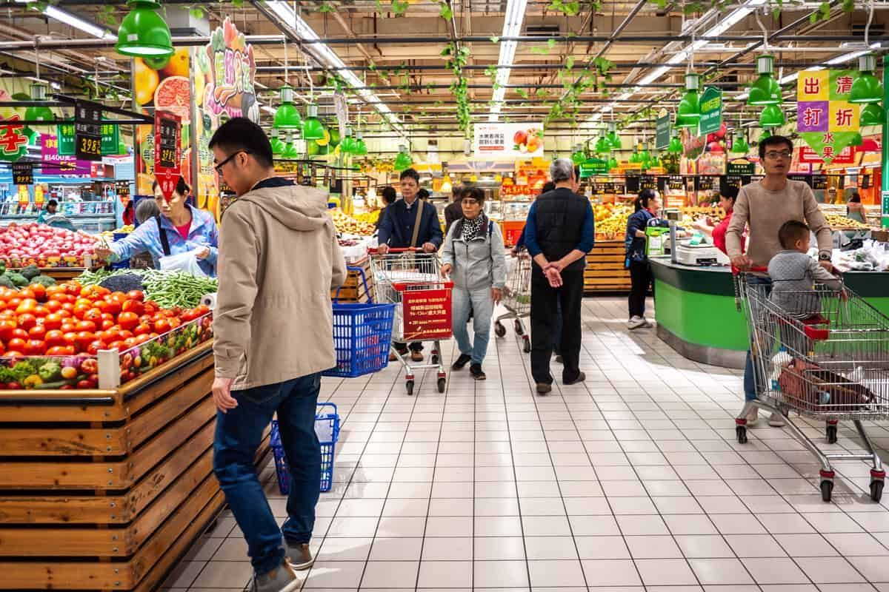

Navigating an Asian Market: A First-Time Shopper's Guide to Smart, Cultural Grocery Adventures

Stepping into an Asian grocery store for the first time can feel overwhelming, but it's also an exciting gateway to discovering authentic flavors, unique ingredients, and cultural treasures. Whether you're looking to recreate your favorite restaurant dishes at home or simply expand your culinary horizons, Miami Kimchi and other Asian markets offer an incredible world of possibilities. This comprehensive guide will transform you from a hesitant newcomer into a confident Asian grocery shopper, helping you navigate everything from exotic produce to essential pantry staples with ease and cultural awareness.
Asian grocery stores are more than just places to shop—they're cultural hubs that preserve culinary traditions and connect communities. Unlike conventional supermarkets, these stores offer ingredients that have been carefully selected to serve diverse Asian communities, from Southeast Asian specialties to East Asian staples. The key to successful shopping lies in understanding the unique layout, embracing the cultural experience, and knowing what to look for.
1. Embrace the Produce: The Heart of the Asian Market
The produce section in Asian markets is where the magic begins. This area showcases the incredible diversity of Asian agriculture, featuring fruits and vegetables that are often impossible to find in conventional grocery stores. The freshness and variety available here will revolutionize your cooking and introduce you to flavors you never knew existed.
Discover Unique Fruits
Asian markets are treasure troves for exotic fruits that offer completely new taste experiences:
·
Durian : Known as the "king of fruits," this spiky, aromatic fruit has a custard-like texture and complex flavor
·
Jackfruit : The world's largest tree fruit, offering sweet, tropical flavors with a unique texture
·
Dragon fruit : Visually stunning with mild, refreshing taste and incredible nutritional benefits
·
Longans : Small, translucent fruits with delicate sweetness, perfect for snacking
·
Rambutan : Hairy exterior hiding sweet, lychee-like flesh inside
Identify Versatile Vegetables
The vegetable selection in Asian markets will expand your cooking repertoire significantly:
·
Bok choy : Crisp, mild green perfect for stir-fries and soups
·
Daikon radish : Large white radish excellent for pickling, soups, and salads
·
Bitter melon : Unique vegetable prized for its health benefits and distinctive taste
·
Lemongrass : Aromatic stalks essential for Thai and Vietnamese cuisine
·
Chinese broccoli : Leafy green with slightly bitter flavor, ideal for quick cooking
Essential Fresh Herbs
Asian markets are excellent sources for fresh herbs that can transform your cooking. Focus on these seasonal herbs that add authentic flavors to your dishes:
·
Thai basil : Distinct anise-like flavor essential for Southeast Asian dishes
·
Pandan leaves : Fragrant leaves used for both sweet and savory applications
·
Kaffir lime leaves : Aromatic leaves that add citrusy fragrance to curries and soups
·
Cilantro : Fresh, bright herb used extensively across Asian cuisines
·
Mint varieties : Different types of mint for various regional specialties
2. Explore Unique Pantry Staples & Sauces
Building an authentic Asian pantry requires understanding the foundation ingredients that form the backbone of Asian cooking. These staples will serve you well across multiple cuisines and cooking styles, providing the authentic flavors that make Asian dishes so memorable.
Foundation Sauces and Condiments
| Ingredient | Uses | Shelf Life | Price Range |
|---|---|---|---|
| Soy Sauce (Light & Dark) | Seasoning, marinating, dipping | 2–3 years | $2–8 |
| Sesame Oil | Flavoring, finishing dishes | 1–2 years | $3–12 |
| Rice Vinegar | Dressings, marinades, sushi rice | 2–3 years | $2–6 |
| Fish Sauce | Umami base for Southeast Asian dishes | 3–4 years | $2–5 |
| Oyster Sauce | Stir-fries, glazes, marinades | 2–3 years | $2–6 |
Essential Fermented Ingredients
These fermented ingredients add depth and complexity to Asian dishes:
- Miso paste : Japanese fermented soybean paste perfect for soups, marinades, and glazes
- Gochujang : Korean chili paste that adds heat and umami to countless dishes
- Curry pastes : Thai red, green, and yellow pastes for authentic curry bases
- Tamarind paste : Sour-sweet flavoring agent essential for Southeast Asian cuisine
- Fermented black beans : Intense, salty flavoring for Chinese dishes
Noodle Varieties
Asian markets offer incredible noodle selections that go far beyond what's available in regular supermarkets:
- Ramen noodles : Fresh and dried varieties for authentic Japanese dishes
- Udon : Thick, chewy wheat noodles perfect for soups and stir-fries
- Rice noodles : Various widths for different regional specialties
- Ho fun : Wide, flat rice noodles essential for Cantonese cuisine
- Glass noodles : Transparent noodles made from mung beans or sweet potato starch
3. Navigate the Store Layout Effectively
Understanding the unique layout of Asian grocery stores will save you time and help you discover new ingredients more efficiently. Unlike Western supermarkets, Asian markets are often organized by cuisine or region rather than by food category.
Understanding Store Organization
Asian grocery stores may focus on foods from specific regions, so you might find specialized sections for Japanese, Korean, or Southeast Asian products. This regional organization means:
- Country-specific aisles : Products grouped by origin (Japanese, Korean, Thai, Chinese, etc.)
- Frozen sections : Often extensive, featuring prepared foods and specialty items
- Refrigerated areas : Fresh noodles, tofu varieties, and prepared foods
- Dry goods sections : Bulk items, snacks, and shelf-stable ingredients
Shopping Strategies
- Start with a specific recipe : Begin by selecting a particular dish that requires ingredients you'd only find at an Asian supermarket
- Use smaller carts : Aisles are often narrow, so opt for baskets or small carts
- Visit multiple stores : Different stores may specialize in different regions or have unique inventory
- Ask about delivery days : Always ask what day their produce comes in for the best selection
4. Be Ready for a Different Shopping Environment
Asian grocery stores operate differently from conventional supermarkets, and understanding these differences will make your shopping experience much more enjoyable and successful.
Pricing and Payment
- Handwritten price tags : Many items may have handwritten prices in multiple languages
- Cash preference : Many stores prefer cash payments, so bring small bills
- Manual price entry : Clerks often manually enter prices, so check your receipt carefully
- Bulk pricing : Many items are sold in larger quantities at better per-unit prices
Store Atmosphere
- Crowded aisles : Stores are often compact with narrow aisles
- Varied hours : Operating hours may differ from conventional grocery stores
- Limited parking : Urban locations may have challenging parking situations
- Multi-generational shopping : Expect to see families shopping together across generations
5. Learn Cultural Shopping Etiquette
Respectful shopping practices will enhance your experience and help you build positive relationships with store staff and other customers.
Respectful Shopping Practices
- Aisle awareness : Don't block narrow aisles; be mindful of other shoppers
- Senior courtesy : Allow elderly customers priority at service counters
- Produce handling : Avoid touching or sampling produce without permission
- Bag your own : Self-bagging is common, so bring reusable bags
- Queue patience : Respect cultural norms around waiting in lines
Building Relationships
Get to know the owners and employees—they are a wealth of information. Building these relationships can lead to:
- Recipe recommendations : Staff can suggest how to use unfamiliar ingredients
- Special order capabilities : Stores may be able to order specific items for you
- Seasonal advice : Learn about seasonal specialties and best times to shop
- Cultural insights : Understand the cultural significance of various ingredients
6. Don't Hesitate to Ask Questions
Be polite, be friendly, and ask questions—even if language barriers exist, having pictures on your phone can help communication. Staff members are usually happy to help and often speak multiple languages.
Effective Communication Strategies
- Use photos : Show pictures of ingredients or dishes you're trying to make
- Learn basic terms : Familiarize yourself with common ingredient names
- Ask for demonstrations : Request guidance on selecting or preparing unfamiliar items
- Inquire about substitutions : Learn about ingredient alternatives if specific items aren't available
7. Snacks, Drinks & Convenience Items
Asian markets offer an incredible variety of snacks and convenience items that can add excitement to your shopping experience and introduce you to new flavors.
Popular Snack Categories
- Sweet treats : Pocky sticks, mochi, red bean pastries, and sesame balls
- Savory options : Shrimp chips, seaweed snacks, rice crackers, and dried squid
- Jelly products : Fruit jellies, grass jelly, and agar-based desserts
- Frozen desserts : Ice cream mochi, taro ice cream, and tropical fruit bars
Beverage Selection
- Bubble tea supplies : Tapioca pearls, flavored syrups, and special straws
- Traditional drinks : Thai iced tea, ramune soda, and coconut water
- Soy milk varieties : Sweetened, unsweetened, and flavored options
- Specialty teas : Oolong, jasmine, and seasonal varieties
8. Build a Starter Asian Pantry
Creating a well-stocked Asian pantry is an investment that will pay dividends in your cooking adventures. Start with these essential categories and gradually expand based on your interests and cooking frequency.
Essential Pantry Items
| Category | Must-Have Items | Storage Tips |
|---|---|---|
| Sauces | Soy sauce, oyster sauce, sesame oil | Cool, dark storage |
| Grains | Jasmine rice, short-grain rice | Airtight containers |
| Noodles | Rice noodles, wheat noodles | Dry storage |
| Spices | Five-spice, white pepper, star anise | Sealed containers |
| Aromatics | Garlic, ginger, scallions | Fresh storage |
9. Recipes to Launch Your Culinary Adventure
Starting with simple recipes will help you use your new ingredients effectively and build confidence in Asian cooking techniques.
Beginner-Friendly Recipes
- Simple stir-fry : Combine fresh vegetables with basic sauces and aromatics
- Noodle soup : Use store-bought broth with fresh noodles and vegetables
- Fried rice : Transform leftover rice with eggs, vegetables, and seasonings
- Dumpling preparation : Use frozen wrappers with simple fillings
- Basic marinades : Combine soy sauce, garlic, and ginger for versatile flavoring
Cooking Techniques to Master
- Stir-frying : High heat, quick cooking, constant movement
- Steaming : Gentle cooking method that preserves nutrients and flavors
- Braising : Slow cooking in flavorful liquids
- Blanching : Quick cooking method for vegetables
- Marinating : Flavor enhancement techniques using Asian ingredients
10. Final Takeaways: A Cultural Food Journey
Asian grocery shopping is more than a practical activity—it's a cultural journey that connects you to diverse culinary traditions and communities. These markets serve as bridges between cultures, preserving traditional ingredients while introducing them to new audiences.
Long-term Benefits
- Cost savings : Many Asian ingredients are significantly cheaper than in regular supermarkets
- Quality advantage : Fresher, more authentic ingredients lead to better cooking results
- Cultural appreciation : Understanding ingredients deepens appreciation for Asian cuisines
- Community connection : Regular shopping builds relationships with local Asian communities
- Culinary expansion : Exposure to new ingredients naturally expands your cooking repertoire
Making It a Habit
Regular visits to Asian markets lead to familiarity and increased knowledge. The more frequently you shop, the more comfortable you become with the environment and the better you understand seasonal availability and quality markers.
Consider exploring different locations to experience variety—places like Miami Kimchi's Coral Springs location or checking out their Miami sales for the best deals on authentic Asian ingredients.
Remember that every expert was once a beginner. Asian grocery shopping becomes easier and more enjoyable with each visit, and the culinary rewards of authentic ingredients will inspire you to continue exploring this rich world of flavors and traditions.
Frequently Asked Questions
What should I buy on my first visit to an Asian grocery store?
Start with basic pantry staples like soy sauce, sesame oil, rice, and fresh ginger. These versatile ingredients can be used in many dishes and will give you a foundation to build upon.
Are Asian grocery stores more expensive than regular supermarkets?
For Asian ingredients, they're typically much cheaper than regular supermarkets. However, non-Asian items may be more expensive. The key is buying ingredients that are commonly used in Asian cooking.
How do I know if produce is fresh in an Asian market?
Look for vibrant colors, firm textures, and minimal blemishes. Don't hesitate to ask staff when fresh deliveries arrive—many stores receive produce on specific days.
Can I find ingredients for specific regional cuisines?
Many Asian markets specialize in particular regions. Some focus on East Asian (Chinese, Japanese, Korean), while others emphasize Southeast Asian (Thai, Vietnamese, Filipino) ingredients.
What's the best way to store Asian ingredients?
Store sauces and pastes in cool, dark places. Keep fresh herbs in the refrigerator. Rice and noodles should be stored in airtight containers to prevent pests and maintain freshness.
How do I communicate if there's a language barrier?
Use photos on your phone, learn basic ingredient names, and be patient. Most staff members are helpful and many speak multiple languages. Pointing and gesturing can also be effective.
Are there any cultural considerations I should be aware of?
Be respectful of other shoppers, especially elderly customers. Don't touch produce unnecessarily, and be patient with different shopping styles and pacing.
By following this comprehensive guide, you'll transform from an uncertain newcomer into a confident Asian grocery shopper, ready to explore the incredible world of authentic Asian cuisine and ingredients.
< Older Post
Newer Post >
Shop these ingredients at Kimchi Mart
Six stores across South Florida — or order online and pick up in an hour.